At a glance一览一覽概要En bref
- Problem问题問題課題Problème
- Keep one story coherent across four disconnected media, and hold a campus audience for 15 minutes.让一个故事在四种互不相连的媒介之间保持连贯，并让校园里的玩家投入 15 分钟。讓一個故事在四種互不相連的媒介之間保持連貫，並讓校園裡的玩家投入 15 分鐘。互いにつながっていない 4 つのメディアをまたいで 1 つの物語を破綻させず、キャンパスのプレイヤーを 15 分間引きつけること。Garder une histoire cohérente sur quatre médias déconnectés, et retenir un public étudiant pendant 15 minutes.
- Role角色角色役割Rôle
- Team lead. Built the web hub (state, routing, puzzles, the ARI guide panel) and integrated the WebGAL story. Henry: UI/UX and interaction. Andrew: AR/VR.组长。开发网页中枢（状态、路由、谜题、ARI 引导面板）并集成 WebGAL 剧情。Henry 负责 UI/UX 与交互，Andrew 负责 AR/VR。組長。開發網頁中樞（狀態、路由、謎題、ARI 引導面板）並整合 WebGAL 劇情。Henry 負責 UI/UX 與互動，Andrew 負責 AR/VR。チームリーダー。ウェブハブ（状態管理、ルーティング、パズル、ARI のガイドパネル）を開発し、WebGAL のストーリーを組み込みました。Henry は UI/UX とインタラクション、Andrew は AR/VR を担当。Chef d’équipe. J’ai développé le hub web (état, routage, énigmes, panneau du guide ARI) et intégré l’histoire WebGAL. Henry : UI/UX et interaction. Andrew : RA/RV.
- Tools工具工具ツールOutils
- Plain HTML/CSS/JS with localStorage, WebGAL, A-Frame / WebXR, Zappar Mattercraft, Leaflet原生 HTML/CSS/JS 与 localStorage、WebGAL、A-Frame / WebXR、Zappar Mattercraft、Leaflet原生 HTML/CSS/JS 與 localStorage、WebGAL、A-Frame / WebXR、Zappar Mattercraft、Leaflet素の HTML/CSS/JS と localStorage、WebGAL、A-Frame / WebXR、Zappar Mattercraft、LeafletHTML/CSS/JS natif avec localStorage, WebGAL, A-Frame / WebXR, Zappar Mattercraft, Leaflet
- Timeline时间线時間線タイムラインCalendrier
- 14 weeks · P1 Narrative → P2 Mapping → P3 Cognitive walkthrough14 周 · P1 叙事 → P2 路线图 → P3 认知走查14 週 · P1 敘事 → P2 路線圖 → P3 認知走查14 週間 · P1 ナラティブ → P2 マッピング → P3 認知的ウォークスルー14 semaines · P1 Narration → P2 Cartographie → P3 Parcours cognitif
- Key Decisions关键决策關鍵決策主な判断Décisions clés
- Two pure structures instead of one hybrid; one config file drives every route; AR/VR are shortcuts, never gates用两种纯粹的结构代替一种混合结构；一个配置文件驱动所有路线；AR/VR 是捷径，而不是关卡用兩種純粹的結構代替一種混合結構；一個配置檔案驅動所有路線；AR/VR 是捷徑，而不是關卡ひとつの混合構造ではなく純粋な構造を 2 つ；1 つの設定ファイルがすべてのルートを動かす；AR/VR は近道であって関門ではないDeux structures pures plutôt qu’un hybride ; un seul fichier de configuration pilote chaque parcours ; la RA et la RV sont des raccourcis, jamais des barrières
- Outcome成果成果成果Résultat
- Tester feedback moved from “I don’t know what to do” to “I want to play again on Hard Mode.”测试反馈从“我不知道该做什么”变成了“我想用困难模式再玩一遍”。測試回饋從“我不知道該做什麼”變成了“我想用困難模式再玩一遍”。テスターの声は「何をすればいいかわからない」から「ハードモードでもう一度遊びたい」に変わりました。Les retours sont passés de « je ne sais pas quoi faire » à « je veux rejouer en mode Difficile ».
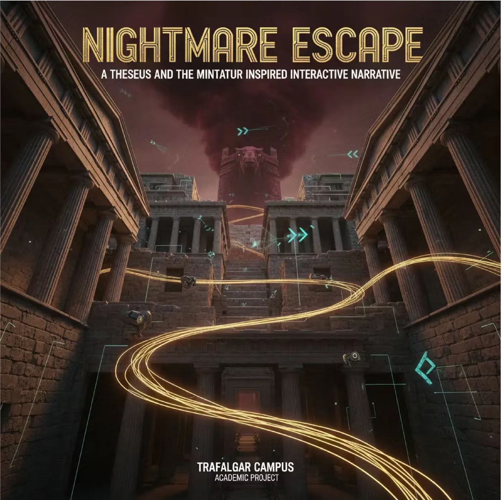
The problem问题問題課題Le problème
Students walk past posters every day, and interactive fiction usually stays inside one browser tab. Spreading a story over web, AR, VR and physical objects risks fragmentation, and AR/VR reliability varies from phone to phone. We needed one mechanic to tie every touchpoint together — collecting the letters of THREAD — and an architecture where no single medium could strand a player.
学生每天从海报前走过，而互动小说通常只停留在一个浏览器标签页里。把一个故事分散到网页、AR、VR 和实体物件上，很容易支离破碎；而 AR/VR 在不同手机上的稳定性也参差不齐。我们需要一个把所有触点串起来的机制——收集 THREAD 的字母——以及一套不会让玩家卡死在任何一种媒介上的架构。
學生每天從海報前走過，而互動小說通常只停留在一個瀏覽器標籤頁裡。把一個故事分散到網頁、AR、VR 和實體物件上，很容易支離破碎；而 AR/VR 在不同手機上的穩定性也參差不齊。我們需要一個把所有觸點串起來的機制——收集 THREAD 的字母——以及一套不會讓玩家卡死在任何一種媒介上的架構。
学生は毎日ポスターの前を素通りし、インタラクティブ・フィクションはたいてい 1 つのブラウザタブの中で完結します。物語をウェブ・AR・VR・実物に分散させるとバラバラになりやすく、AR/VR の安定性もスマートフォンによってまちまちです。すべての接点を 1 本につなぐ仕組み——THREAD の文字を集めること——と、どのメディアでもプレイヤーが行き詰まらない構造が必要でした。
Les étudiants passent tous les jours devant des affiches, et la fiction interactive reste en général dans un seul onglet. Répartir une histoire entre web, RA, RV et objets physiques risque de la fragmenter, et la fiabilité de la RA/RV varie d’un téléphone à l’autre. Il nous fallait une mécanique qui relie chaque point de contact — réunir les lettres de THREAD — et une architecture où aucun média ne peut bloquer un joueur.
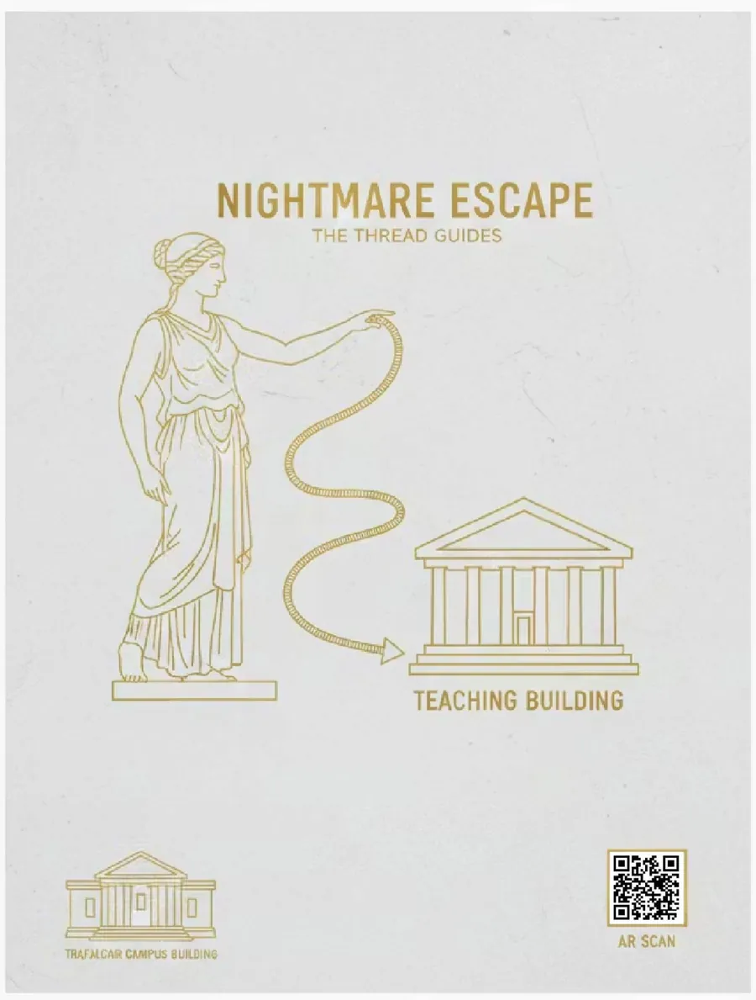
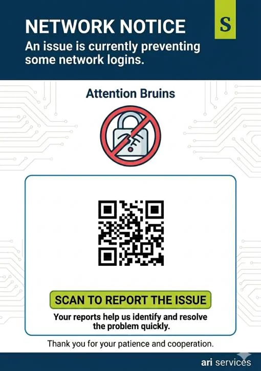
How it plays玩法玩法遊び方Comment on joue
- Normal Mode (string of pearls) — Entry → Puzzle 1 → 2 → 3 → Exit. AR and VR branch off after Puzzle 1 as optional shortcuts.
- Hard Mode (hub and spoke) — all six fragment nodes open at once, and the exit needs every one: three web puzzles, AR, VR and the physical envelope.
- Guessing THREAD at the exit works at any time in Normal Mode; Hard Mode closes that shortcut.
- Three endings — Won, Observed and Thread Weaver — depend on the player’s choices and how efficiently they moved through the maze. Finishing a run unlocks New Game+.
- 普通模式（串珠式）——入口 → 谜题 1 → 2 → 3 → 出口。AR 与 VR 在谜题 1 之后作为可选捷径分出。
- 困难模式（中心辐射式）——六个碎片节点同时开放，出口需要全部集齐：三个网页谜题、AR、VR 和实体信封。
- 普通模式下，随时在出口猜出 THREAD 都能过关；困难模式关闭了这条捷径。
- 三个结局——Won、Observed、Thread Weaver——取决于玩家的选择和穿越迷宫的效率。通关后解锁二周目（New Game+）。
- 普通模式（串珠式）——入口 → 謎題 1 → 2 → 3 → 出口。AR 與 VR 在謎題 1 之後作為可選捷徑分出。
- 困難模式（中心輻射式）——六個碎片節點同時開放，出口需要全部集齊：三個網頁謎題、AR、VR 和實體信封。
- 普通模式下，隨時在出口猜出 THREAD 都能過關；困難模式關閉了這條捷徑。
- 三個結局——Won、Observed、Thread Weaver——取決於玩家的選擇和穿越迷宮的效率。通關後解鎖二週目（New Game+）。
- ノーマルモード（ストリング・オブ・パールズ）——入口 → パズル 1 → 2 → 3 → 出口。AR と VR はパズル 1 の後に任意の近道として分岐します。
- ハードモード（ハブ＆スポーク）——6 つの欠片ノードが最初からすべて開き、出口にはその全部が必要：ウェブパズル 3 つ、AR、VR、そして実物の封筒。
- ノーマルモードでは、出口でいつでも THREAD を当てればクリアできます。ハードモードではこの近道は使えません。
- 3 つのエンディング——Won、Observed、Thread Weaver——は、プレイヤーの選択と迷宮を進む効率で決まります。クリアすると New Game+ が解放されます。
- Mode Normal (collier de perles) — Entrée → Énigme 1 → 2 → 3 → Sortie. La RA et la RV s’ouvrent après l’énigme 1 comme raccourcis facultatifs.
- Mode Difficile (en étoile) — les six nœuds de fragments s’ouvrent d’emblée, et la sortie les exige tous : trois énigmes web, la RA, la RV et l’enveloppe physique.
- En mode Normal, deviner THREAD à la sortie fonctionne à tout moment ; le mode Difficile ferme ce raccourci.
- Trois fins — Won, Observed et Thread Weaver — dépendent des choix du joueur et de l’efficacité de son parcours. Terminer une partie débloque un New Game+.
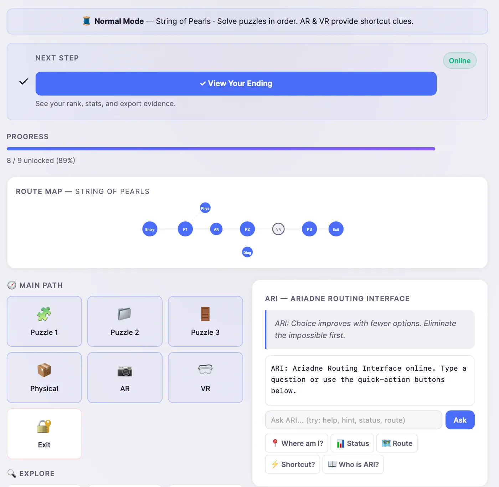
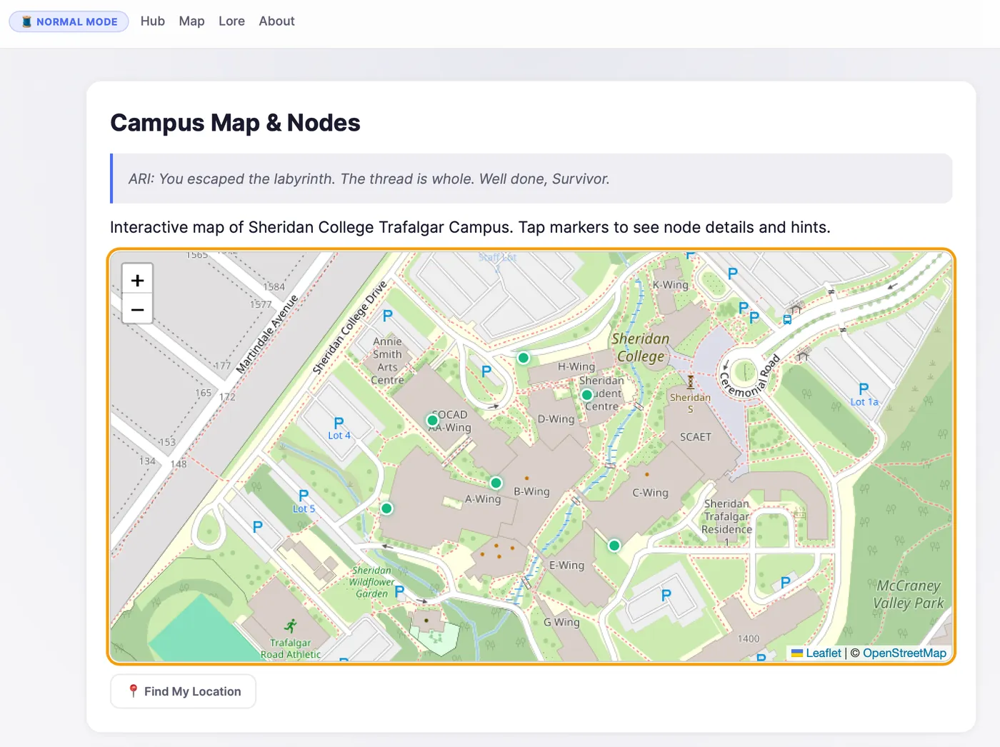
We chose the Theseus myth because it gives a clear antagonist (the Minotaur), guide (Ariadne, here ARI) and goal (escape), and it justifies every platform as another corridor of the maze. The Minotaur is a system, not a character: glitches, misdirected links and hostile messages. The player stays nameless so any student can step in.
我们选择了忒修斯神话：它自带清晰的反派（米诺陶）、向导（阿里阿德涅，在这里是 ARI）和目标（逃出去），也让每个平台都顺理成章地成为迷宫里的又一条走廊。米诺陶不是一个角色，而是一个系统：故障、错误跳转的链接和充满敌意的提示。玩家没有名字，任何学生都能代入。
我們選擇了忒修斯神話：它自帶清晰的反派（米諾陶）、嚮導（阿里阿德涅，在這裡是 ARI）和目標（逃出去），也讓每個平臺都順理成章地成為迷宮裡的又一條走廊。米諾陶不是一個角色，而是一個系統：故障、錯誤跳轉的連結和充滿敵意的提示。玩家沒有名字，任何學生都能代入。
テセウス神話を選んだのは、明確な敵（ミノタウロス）、案内役（アリアドネ、ここでは ARI）、目的（脱出）がそろっていて、どのプラットフォームも迷宮の新しい通路として自然に位置づけられるからです。ミノタウロスはキャラクターではなくシステム——グリッチ、誤ったリンク、敵意のあるメッセージ。プレイヤーは名前を持たず、どの学生でも自分を重ねられます。
Nous avons choisi le mythe de Thésée parce qu’il offre un antagoniste clair (le Minotaure), un guide (Ariane, ici ARI) et un but (s’échapper), et qu’il justifie chaque plateforme comme un couloir de plus du labyrinthe. Le Minotaure est un système, pas un personnage : bugs, liens détournés et messages hostiles. Le joueur reste anonyme pour que n’importe quel étudiant puisse s’y projeter.
- Cut: a two-player AR puzzle that needed simultaneous scans. It worked in testing, but players meet the game alone.
- Cut: an AI-voiced ARI on the hub. So-VITS-SVC output felt uncanny, so the hub’s ARI became text-only; the physical ARI still speaks.
- 砍掉：需要两人同时扫描的双人 AR 谜题。测试中可行，但玩家通常是一个人遇到这个游戏。
- 砍掉：中枢里用 AI 配音的 ARI。So-VITS-SVC 的效果让人不适，于是中枢里的 ARI 改为纯文字；实体 ARI 仍然保留语音。
- 砍掉：需要兩人同時掃描的雙人 AR 謎題。測試中可行，但玩家通常是一個人遇到這個遊戲。
- 砍掉：中樞裡用 AI 配音的 ARI。So-VITS-SVC 的效果讓人不適，於是中樞裡的 ARI 改為純文字；實體 ARI 仍然保留語音。
- カット：2 人同時のスキャンが必要な協力型 AR パズル。テストでは動いたものの、プレイヤーはたいてい 1 人でゲームに出会います。
- カット：ハブ上の AI 音声の ARI。So-VITS-SVC の声が不気味だったため、ハブの ARI はテキストのみに。実体の ARI は今も話します。
- Abandonné : une énigme RA à deux joueurs exigeant des scans simultanés. Elle fonctionnait en test, mais on découvre le jeu seul.
- Abandonné : un ARI doublé par IA sur le hub. La voix So-VITS-SVC dérangeait, l’ARI du hub est donc passé au texte seul ; l’ARI physique parle toujours.
Every path became a node with an ID, a type (web, AR, VR, physical, rabbit hole), hint text and the nodes it unlocks. That data lives in a single config.js the hub reads at runtime, so the map is the game logic, not a drawing of it — we could rebalance a route without touching the engine.
每条路径都被拆成一个节点：ID、类型（网页、AR、VR、实体、兔子洞）、提示文字，以及它会解锁的节点。这些数据都放在一个 config.js 里，中枢在运行时读取——路线图就是游戏逻辑本身，而不是一张示意图。调整路线时完全不用改引擎。
每條路徑都被拆成一個節點：ID、類型（網頁、AR、VR、實體、兔子洞）、提示文字，以及它會解鎖的節點。這些資料都放在一個 config.js 裡，中樞在執行時讀取——路線圖就是遊戲邏輯本身，而不是一張示意圖。調整路線時完全不用改引擎。
すべての経路を、ID・種類（ウェブ、AR、VR、実物、ラビットホール）・ヒント文・解放するノードを持つノードにしました。データは 1 つの config.js にまとめ、ハブが実行時に読み込みます。マップは図ではなくゲームロジックそのもので、エンジンに触れずにルートを調整できました。
Chaque parcours est devenu un nœud avec un identifiant, un type (web, RA, RV, physique, terrier), un texte d’indice et les nœuds qu’il débloque. Ces données vivent dans un seul config.js lu par le hub à l’exécution : la carte est la logique du jeu, pas un dessin — on pouvait rééquilibrer un parcours sans toucher au moteur.
We kept the two modes pure instead of fusing them, which made each one predictable to test. Dynamic difficulty was prototyped and dropped: it made runs impossible to compare.
我们让两种模式各自保持纯粹，而不是揉成一种，这样每种模式都便于预测和测试。动态难度做过原型后被放弃：它让每一局都无法相互比较。
我們讓兩種模式各自保持純粹，而不是揉成一種，這樣每種模式都便於預測和測試。動態難度做過原型後被放棄：它讓每一局都無法相互比較。
2 つのモードは混ぜずにそれぞれ純粋に保ち、テストしやすくしました。動的難易度も試作しましたが、プレイ同士を比較できなくなるため見送りました。
Nous avons gardé les deux modes purs plutôt que de les fusionner, ce qui rendait chacun prévisible à tester. La difficulté dynamique a été prototypée puis abandonnée : elle rendait les parties impossibles à comparer.
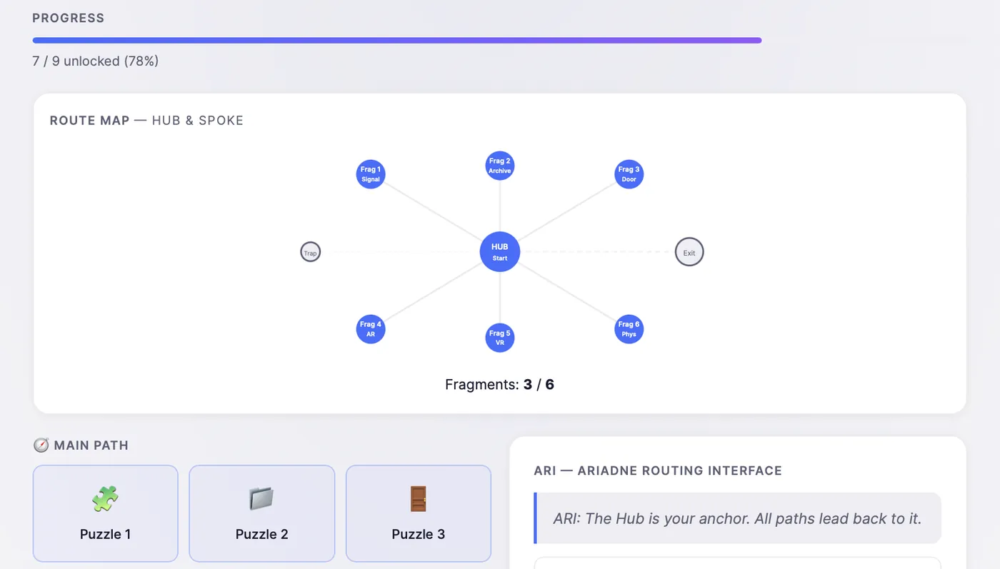
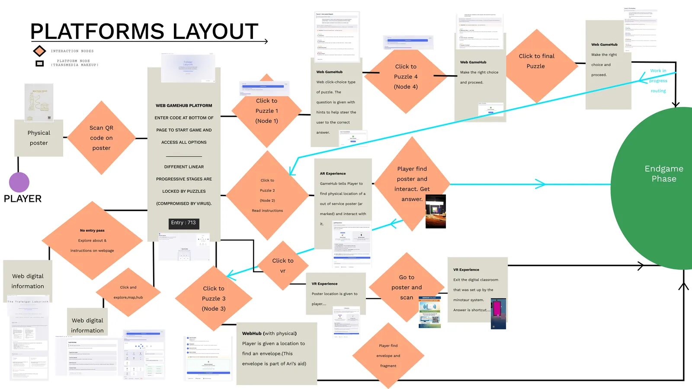
Four rounds of in-person testing on campus. Watching testers freeze right after the QR scan told us more than any survey could, and every change below came from that.
我们在校园里做了四轮面对面测试。亲眼看到测试者扫完二维码就愣住，比任何问卷都更有说服力——下面的每一项改动都来自这样的观察。
我們在校園裡做了四輪面對面測試。親眼看到測試者掃完 QR Code 就愣住，比任何問卷都更有說服力——下面的每一項改動都來自這樣的觀察。
キャンパスで対面テストを 4 回行いました。QR コードを読み取った直後に固まってしまうテスターを見ることは、どんなアンケートよりも多くを教えてくれました。以下の変更はすべてそこから生まれています。
Quatre sessions de tests en personne sur le campus. Voir des testeurs se figer juste après le scan du QR code nous en a appris plus qu’un sondage, et chaque changement ci-dessous en découle.
- User guide — testers didn’t understand the objective after scanning.
- Progress bar and route map — players lost track of which fragments they had.
- Progress import/export — 15 minutes was optimistic, so a run can be resumed later with a code.
- A real ending screen — typing the password and simply stopping felt abrupt.
- Gentler pressure — a countdown timer became a subtle heat meter, and a free-text ARI chatbot became quick-action hint buttons.
- 新手指引——测试者扫码后不明白目标是什么。
- 进度条与路线图——玩家记不清自己拿到了哪些碎片。
- 进度导入/导出——15 分钟的预估偏乐观，现在可以凭一段代码稍后继续。
- 真正的结局页面——输完密码就戛然而止，太突兀了。
- 更温和的压迫感——倒计时改成了含蓄的“热度”指示，自由输入的 ARI 聊天机器人改成了快捷提示按钮。
- 新手指引——測試者掃描後不明白目標是什麼。
- 進度條與路線圖——玩家記不清自己拿到了哪些碎片。
- 進度匯入/匯出——15 分鐘的預估偏樂觀，現在可以憑一段代碼稍後繼續。
- 真正的結局頁面——輸完密碼就戛然而止，太突兀了。
- 更溫和的壓迫感——倒計時改成了含蓄的“熱度”指示，自由輸入的 ARI 聊天機器人改成了快捷提示按鈕。
- ユーザーガイド——スキャン後、テスターは目的を理解できていませんでした。
- 進行バーとルートマップ——どの欠片を持っているか、プレイヤーが把握できなくなっていました。
- 進行状況のインポート／エクスポート——15 分という見積もりは楽観的だったため、コードで後から再開できるようにしました。
- きちんとしたエンディング画面——パスワードを入れて終わるだけでは唐突でした。
- やわらかいプレッシャー——カウントダウンは控えめなヒートメーターに、自由入力の ARI チャットボットはワンタップのヒントボタンに変えました。
- Guide de démarrage — après le scan, les testeurs ne comprenaient pas l’objectif.
- Barre de progression et carte — les joueurs ne savaient plus quels fragments ils avaient.
- Import/export de la progression — 15 minutes était optimiste ; une partie peut reprendre plus tard grâce à un code.
- Un véritable écran de fin — taper le mot de passe puis s’arrêter net semblait abrupt.
- Une pression plus douce — le compte à rebours est devenu une jauge de chaleur discrète, et le chatbot ARI en texte libre, des boutons d’indice rapides.
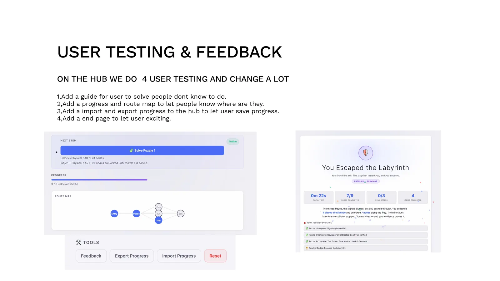
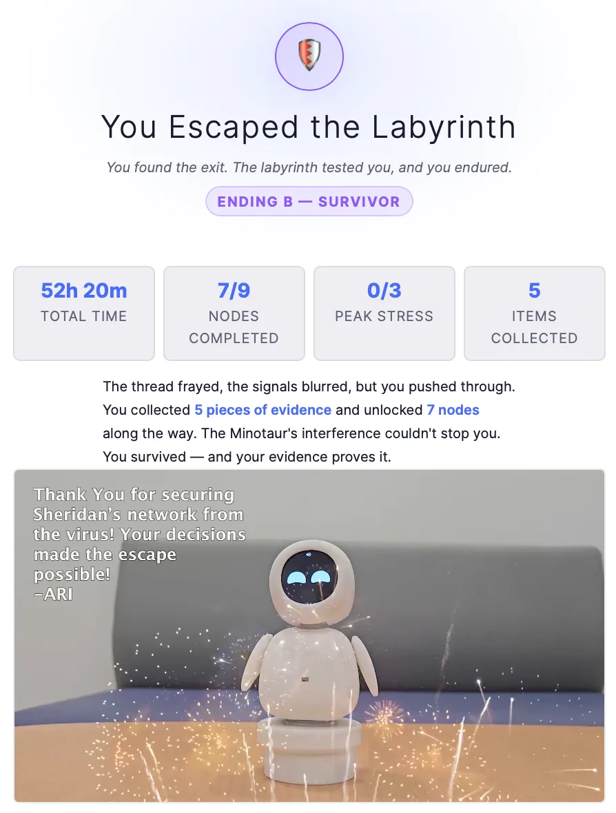
The six platforms六个平台六個平臺6 つのプラットフォームLes six plateformes
Every platform hands back to the hub. When VR crashed on one tester’s phone, the web hub still carried them to a valid ending.
每个平台最终都会回到中枢。有一位测试者的手机上 VR 崩溃了，但网页中枢依然让这局游戏走到了有效的结局。
每個平臺最終都會回到中樞。有一位測試者的手機上 VR 崩潰了，但網頁中樞依然讓這局遊戲走到了有效的結局。
どのプラットフォームも最後はハブに戻ります。あるテスターのスマートフォンで VR が落ちたときも、ウェブハブがきちんとしたエンディングまで導きました。
Chaque plateforme renvoie au hub. Quand la RV a planté sur le téléphone d’un testeur, le hub web l’a tout de même mené à une fin valide.
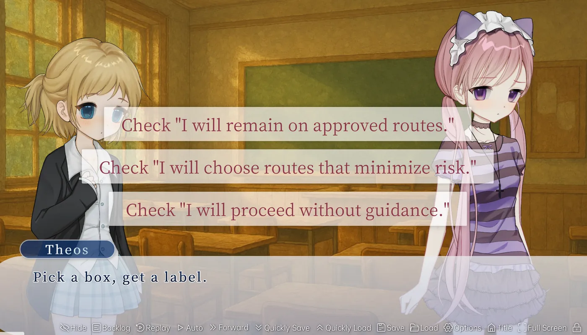
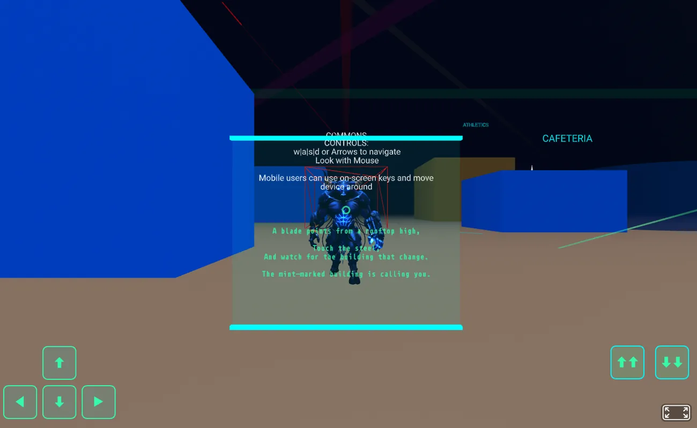
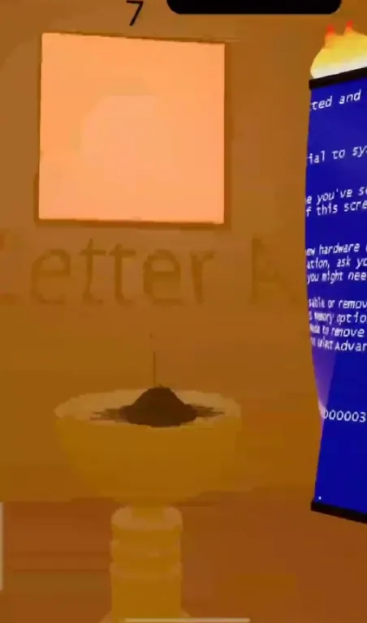
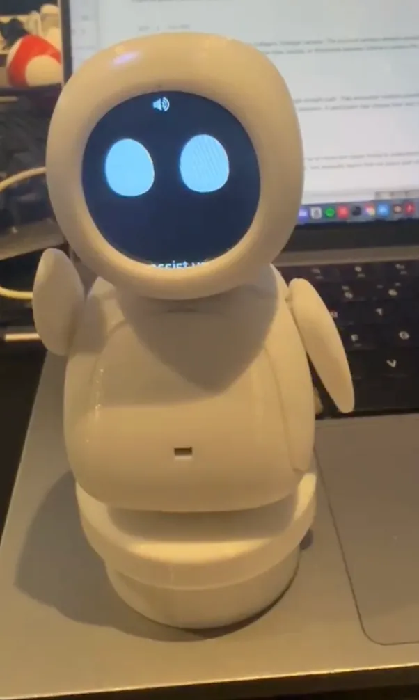
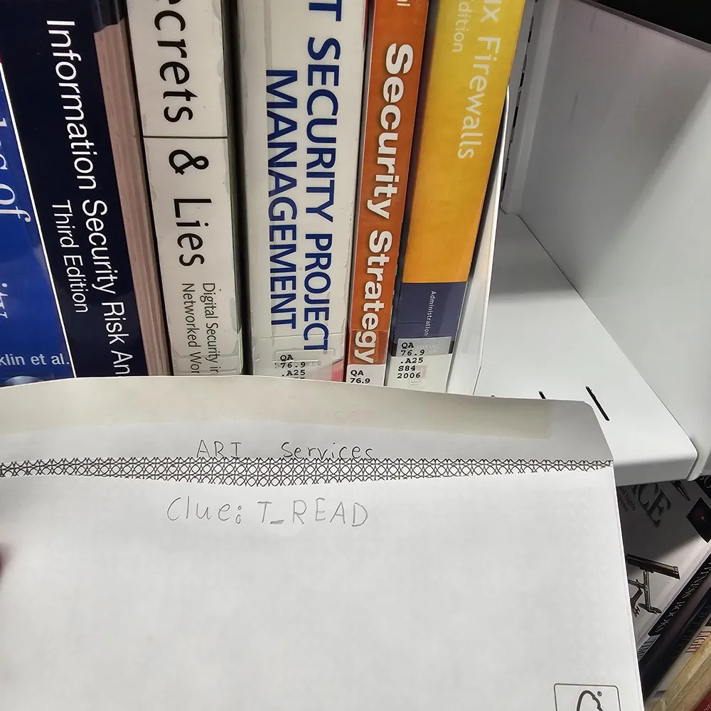
What I learned收获收穫学んだことCe que j’en retiens
- Test in person, early. Seeing someone freeze at the entry screen beat fifty “it was fine” survey answers.
- Design for failure. With AR and VR required, the job was anticipating device and user errors so no node could strand a player.
- Use AI where it pays. It sped up 3D concept models and asset ideas; video editing and some debugging were faster by hand.
- 尽早做面对面测试。亲眼看到有人在入口页愣住，胜过五十份写着“还行”的问卷。
- 为失败而设计。既然 AR 和 VR 是必选项，关键就在于预判设备和用户的各种出错，确保没有任何一个节点会把玩家困住。
- 把 AI 用在值得的地方。它加快了 3D 概念模型和素材构思；而剪视频和部分调试，手动反而更快。
- 儘早做面對面測試。親眼看到有人在入口頁愣住，勝過五十份寫著“還行”的問卷。
- 為失敗而設計。既然 AR 和 VR 是必選項，關鍵就在於預判裝置和使用者的各種出錯，確保沒有任何一個節點會把玩家困住。
- 把 AI 用在值得的地方。它加快了 3D 概念模型和素材構思；而剪影片和部分除錯，手動反而更快。
- 早めに、対面でテストする。入口画面で固まる人を一度見るほうが、「問題なかった」というアンケート 50 件よりも役に立ちます。
- 失敗を前提に設計する。AR と VR が必須である以上、端末やユーザーのミスを先回りして、どのノードでもプレイヤーが行き詰まらないようにすることが仕事でした。
- AI は効果のあるところで使う。3D のコンセプトモデルや素材のアイデア出しは速くなりましたが、動画編集や一部のデバッグは手作業のほうが速かったです。
- Tester tôt, en personne. Voir quelqu’un se figer sur l’écran d’entrée vaut mieux que cinquante réponses « c’était bien ».
- Concevoir pour l’échec. La RA et la RV étant obligatoires, il fallait anticiper les erreurs d’appareil et d’utilisateur pour qu’aucun nœud ne bloque un joueur.
- Utiliser l’IA là où elle rapporte. Elle a accéléré les modèles 3D de concept et les idées d’assets ; le montage vidéo et une partie du débogage allaient plus vite à la main.
Credits致谢致謝クレジットCrédits
Team Nightmare Escape — Yiyang Zhang (team lead, code), Henry (UI/UX and interaction), Andrew (AR/VR). VDES 34444 Interactive Narrative, Sheridan College, Winter 2026.
Nightmare Escape 小组——Yiyang Zhang（组长、开发）、Henry（UI/UX 与交互）、Andrew（AR/VR）。谢尔丹学院 VDES 34444 互动叙事课程，2026 年冬季学期。
Nightmare Escape 小組——Yiyang Zhang（組長、開發）、Henry（UI/UX 與互動）、Andrew（AR/VR）。謝爾丹學院 VDES 34444 互動敘事課程，2026 年冬季學期。
チーム Nightmare Escape——Yiyang Zhang（チームリーダー、開発）、Henry（UI/UX とインタラクション）、Andrew（AR/VR）。シェリダン・カレッジ VDES 34444 インタラクティブ・ナラティブ、2026 年冬学期。
Équipe Nightmare Escape — Yiyang Zhang (chef d’équipe, code), Henry (UI/UX et interaction), Andrew (RA/RV). VDES 34444 Narration interactive, Sheridan College, hiver 2026.
Related: 梦魇逃亡 Nightmare Escape, the visual novel I’m developing for Steam.
相关：梦魇逃亡，我正在为 Steam 开发的视觉小说。
相關：梦魇逃亡，我正在為 Steam 開發的視覺小說。
関連：梦魇逃亡 Nightmare Escape——Steam 向けに開発中のビジュアルノベル。
Voir aussi : 梦魇逃亡 Nightmare Escape, le visual novel que je développe pour Steam.